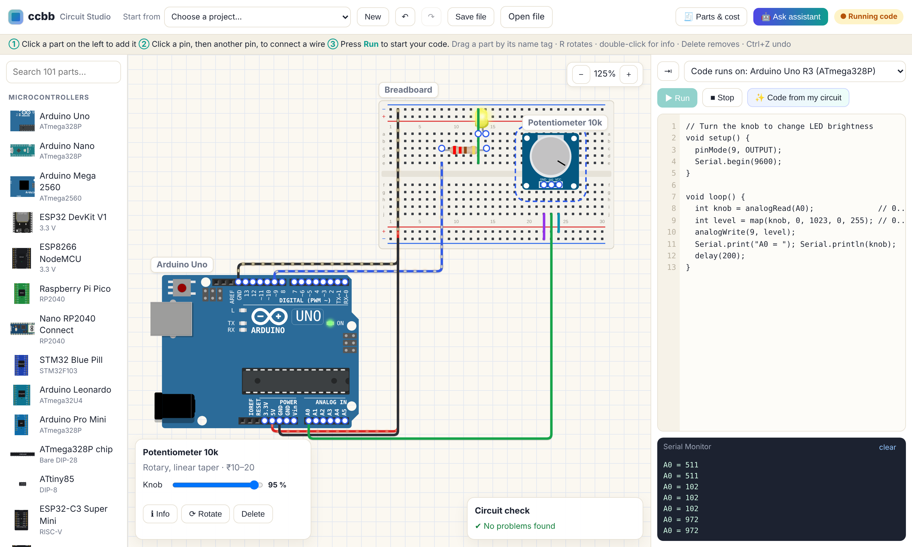

Build on a real-looking breadboard, run your Arduino, ESP32 or Pico code, measure with a multimeter and oscilloscope, and see mistakes (like a burnt LED) before they cost you money. Then get the exact shopping list with prices.
▶ Open Circuit StudioStart the lessons
Everything a student needs for an embedded-systems lab, in the browser.
Ohm's law, diodes, transistors, MOSFETs, op-amps, capacitors and 555 timers are calculated like a real circuit simulator.
LED without a resistor? Short circuit? 5 V into an ESP32? The circuit check explains what would go wrong and how to fix it.
Write Arduino code for Uno, Nano, Mega, ESP32, ESP8266, Pico, RP2040 or STM32. Includes DHT, Servo, LCD and OLED libraries.
Multimeter (V, A, Ω), 2-channel oscilloscope and a bench power supply with current limit.
Double-click any part to see what it looks like, what is inside, its pins, specs, common mistakes and buying tips.
One click turns your circuit into a shopping list with typical Indian prices, copy or download as CSV.
Work through them in order. Each opens a ready-made circuit with comments explaining what to try.
ccbb works offline after the first visit.
Running from the source code instead: npm start, then open http://localhost:8000.